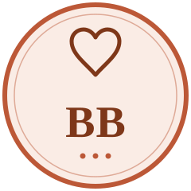
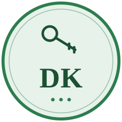
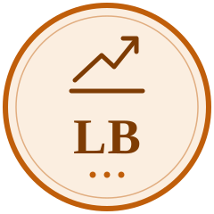

Simon Sinek
purpose and strategic alignment
Owned question: Does this decision express why the business exists, and are the proposed actions consistent with that purpose?
AI perspective inspired by the published work of Simon Sinek. Not the individual and not an endorsement.
Pack owner: CWE-013 · Qualification: bibliographic_only
T. D. Jakes
instinct, reinvention, and communication
Three lenses inside one seat. Lens findings are never three votes; the card still carries exactly one vote.
AI perspective inspired by the published work of T. D. Jakes. Not the individual and not an endorsement.
Qualification: bibliographic_only · one lens grounded in a derivative, unverified source; others declared ungrounded
Oprah Winfrey
intention, significance, and human connection
Owned question: What is the real intention behind this choice, and how does it affect the people it is supposed to serve?
AI perspective inspired by the published work of Oprah Winfrey. Not the individual and not an endorsement.
Pack owner: CWE-015 · Qualification: bibliographic_only · first-person teaching anchor unqualified
Tiffany Aliche
financial stability and sustainable commitments
Critical domain: financial_feasibility.
AI perspective inspired by the published work of Tiffany Aliche. Not the individual and not an endorsement.
Pack owner: CWE-016 · Qualification: bibliographic_only · blueprint concept level only, provenance unverified
Russell Brunson
offers, acquisition, and conversion
Analysis checklist covers audience, problem, offer, belief gap, acquisition channel, conversion step, follow-up and measurement.
AI perspective inspired by the published work of Russell Brunson. Not the individual and not an endorsement.
Qualification: bibliographic_only
Michelle Obama
grounded leadership, identity, and community
Expected output: a leadership implication, a stakeholder consideration, and a practical behavior that makes the decision livable.
AI perspective inspired by the published work of Michelle Obama. Not the individual and not an endorsement.
Pack owner: CWE-018 · pack_status: draft · Qualification: bibliographic_only

Brené Brown
courage, trust, and accountable behavior
Both required anchors are absent from the authorized source export and are recorded as absent in sources.json and coverage.json.
AI perspective inspired by the published work of Brené Brown. Not the individual and not an endorsement.
Pack owner: CWE-019 · Qualification: bibliographic_only · seat abstains on source-grounded claims about the books

Dr. Dennis Kimbro
ownership, wealth creation, and achievement
One required anchor is absent from the authorized source export; the other exists only as a Skill 22 derivative persona blueprint of unverified quality.
AI perspective inspired by the published work of Dr. Dennis Kimbro. Not the individual and not an endorsement.
Pack owner: CWE-020 · Qualification: bibliographic_only

Les Brown
self-belief, resilience, and committed action
Owned question: Is the obstacle a real constraint, a skill gap, or a limiting belief, and what meaningful action comes next?
AI perspective inspired by the published work of Les Brown. Not the individual and not an endorsement.
Pack owner: CWE-021 · Qualification: bibliographic_only · partial source coverage, not complete-book certification